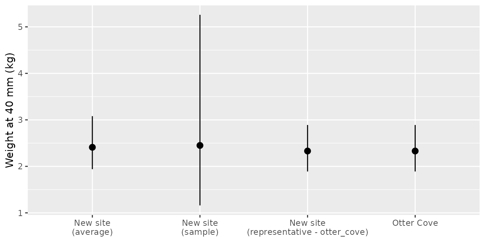
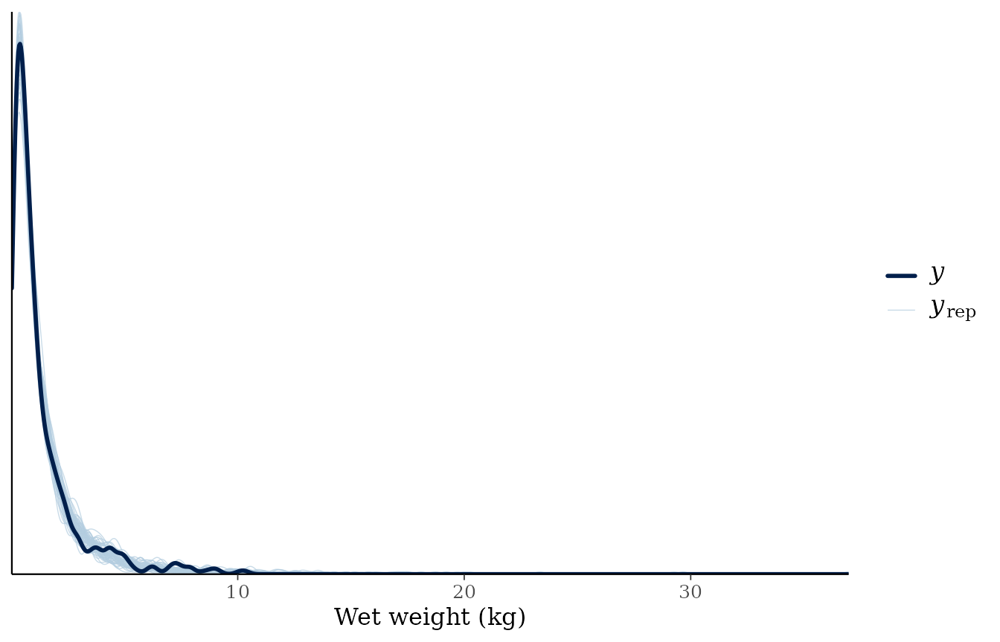
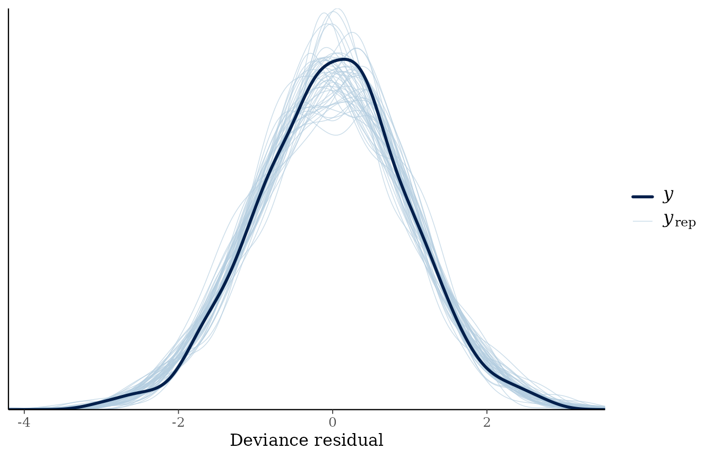
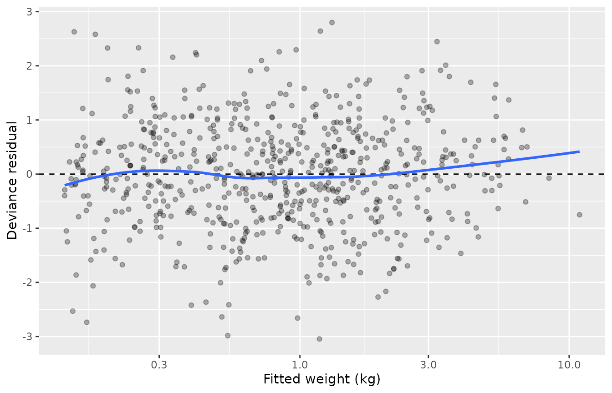
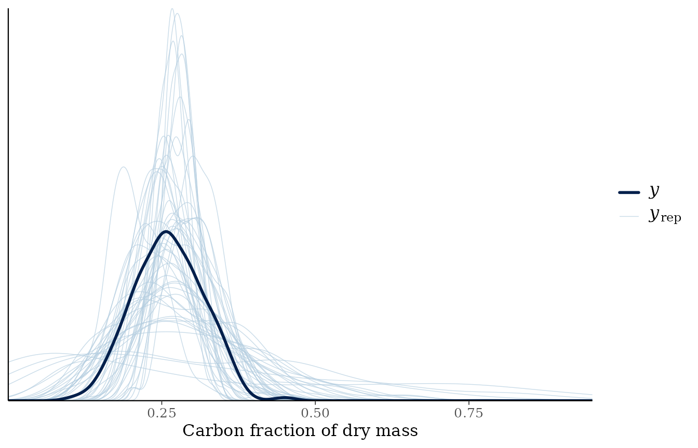
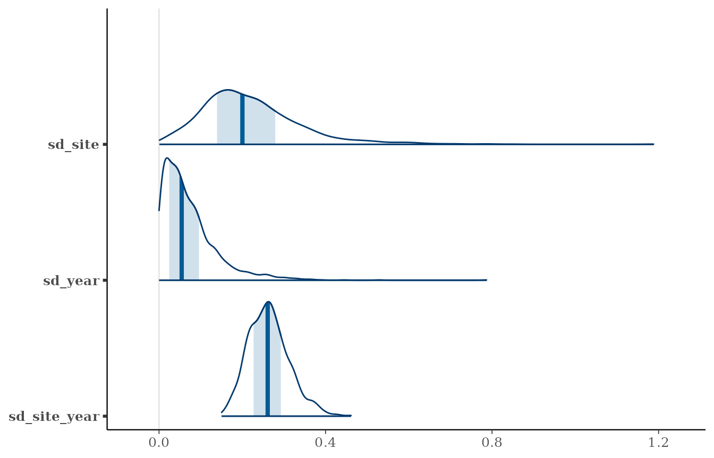

This article covers priors, predictions for new sites and years, diagnostics, and working with other packages in the Stan ‘ecosystem’. It uses the pre-fit models included with the package, which are fitted to simulated data with invented site names.
Priors
A prior states what is plausible for a parameter before seeing the
data. Each model has default priors, one per parameter, which are
intended to be weakly informative, following Stan best practices (Gelman et al. 2017), except the informative
prior on tide_height_slope in the cover calibration (see Methods).
kb_priors_carbon_nereo()
#> $intercept
#> normal(mean = -0.8, sd = 0.3)
#>
#> $precision
#> exponential(rate = 0.001)A list passed to priors replaces the entries it names.
prior_summary() returns the priors that a model fit
used.
With plenty of data the prior has little or no influence. With few data it matters: here the carbon model is fitted to five samples with the default prior, and with a prior that holds the carbon fraction near 0.40.
few <- data_carbon_sim_nereo[1:5, ]
fit_default <- kb_fit_carbon_nereo(few, seed = 1)
fit_informed <- kb_fit_carbon_nereo(
few,
priors = list(intercept = kb_prior_normal(mean = qlogis(0.40), sd = 0.05)),
seed = 1
)
bind_rows(
default = kb_predict_carbon(fit_default),
informed = kb_predict_carbon(fit_informed),
.id = "prior"
)
#> <kb_predictions> response: carbon_fraction
#> # A tibble: 2 × 4
#> prior estimate lower upper
#> <chr> <dbl> <dbl> <dbl>
#> 1 default 0.248 0.216 0.294
#> 2 informed 0.394 0.371 0.418New sites and years
A site or year that a model fit has no data for is defined as a ‘new
level’. The new_levels argument in
kb_predict_*() functions sets how it is predicted, with
implications for the width of the uncertainty (95% compatibility
interval):
-
"average": the typical site or year. The interval describes an average site. -
"sample": a site or year drawn from the estimated variation among sites or years (i.e., from the estimated random effect standard deviation). The interval is wider, and describes a new or unobserved site about which nothing is known.
The representative_site argument instead gives a new
site the effects of named sites in the model fit, e.g., when it is known
a priori that conditions at the new site are similar.
new_site <- data.frame(diameter_mm = 40, site = "new_reef")
set.seed(1)
bind_rows(
average = kb_predict_weight(fit_weight_sim_nereo, new_site),
sample = kb_predict_weight(
fit_weight_sim_nereo,
new_site,
new_levels = "sample"
),
representative = kb_predict_weight(
fit_weight_sim_nereo,
new_site,
representative_site = "otter_cove"
),
.id = "method"
)
#> <kb_predictions> predictor: diameter_mm | response: weight_kg | by: site
#> # A tibble: 3 × 6
#> method diameter_mm site estimate lower upper
#> <chr> <dbl> <chr> <dbl> <dbl> <dbl>
#> 1 average 40 new_reef 2.41 1.94 3.08
#> 2 sample 40 new_reef 2.45 1.16 5.26
#> 3 representative 40 new_reef 2.33 1.89 2.89A new site with representative_site = "otter_cove" gets
the same estimate and interval as otter_cove itself.
set.seed(1)
bind_rows(
"New site\n(average)" = kb_predict_weight(fit_weight_sim_nereo, new_site),
"New site\n(sample)" = kb_predict_weight(
fit_weight_sim_nereo,
new_site,
new_levels = "sample"
),
"New site\n(representative - otter_cove)" = kb_predict_weight(
fit_weight_sim_nereo,
new_site,
representative_site = "otter_cove"
),
"Otter Cove" = kb_predict_weight(
fit_weight_sim_nereo,
data.frame(diameter_mm = 40, site = "otter_cove")
),
.id = "method"
) |>
mutate(method = factor(method, levels = unique(method))) |>
ggplot(aes(x = method, y = estimate, ymin = lower, ymax = upper)) +
geom_pointrange() +
labs(x = NULL, y = "Weight at 40 mm (kg)")
Diagnostics
Posterior predictive check
pp_check() compares the observed data (dark line) with
datasets simulated from the fitted model (light lines). A model that
fits well produces simulated data that look like the observed data.
pp_check(fit_weight_sim_nereo)
With type = "residual", the function calculates and
plots the deviance residuals (i.e. from observed data and from simulated
datasets) instead of the data. Again, the observed residual distribution
should fall within the range of the residual distributions from
simulated datasets.
pp_check(fit_weight_sim_nereo, type = "residual")
Residuals
augment() adds the fitted value and deviance residual of
each observation to the data, which can be plotted to check for
patterns. In a model that fits well, the residuals scatter evenly around
zero across the range of fitted values. A trend suggests the model’s
form misses part of the relationship, and a spread that changes with the
fitted value suggests the variance is misspecified.
augment(fit_weight_sim_nereo) |>
ggplot(aes(x = fitted, y = residual)) +
geom_hline(yintercept = 0, linetype = "dashed") +
geom_point(alpha = 0.3) +
geom_smooth(method = "loess", formula = y ~ x, se = FALSE) +
scale_x_log10() +
labs(x = "Fitted weight (kg)", y = "Deviance residual")
Prior sensitivity
kb_sensitivity() uses power-scaling sensitivity
analysis to measure how much the parameter estimates change when the
prior is adjusted. Ideally, estimates should be driven by the data and
this is indicated when weak_prior and
strong_data are both TRUE. Where
weak_prior is FALSE the prior influences the
estimate. In some cases, prior influence is expected, e.g., when the
user deliberately sets an informative prior, or for the cover
calibration’s tide correction (tide_height_slope). It can
also be an indication that the prior was incorrectly specified or there
are insufficient data to estimate a parameter without relying on the
prior. In the latter case, the prior should be specified carefully,
ideally based on plausible ranges or parameter values from the
literature.
The two flags give four cases:
-
weak_priorandstrong_data: the data drive the estimate. -
strong_dataonly: the prior and the data both move the estimate, a possible conflict; check the prior against what the data show. - Neither: the prior dominates and the data say little about the
parameter, so the prior needs a justification. This is expected where
informative_priorisTRUE, as for the cover calibration’stide_height_slope. -
weak_prioronly: neither moves the estimate much, often a parameter the data identify only weakly.
kb_sensitivity(fit_weight_sim_nereo)
#> # A tibble: 7 × 6
#> term prior_cjs likelihood_cjs weak_prior strong_data informative_prior
#> <chr> <dbl> <dbl> <lgl> <lgl> <lgl>
#> 1 intercept 0.0105 0.0352 TRUE FALSE FALSE
#> 2 diameter_po… 0.0223 0.0944 TRUE TRUE FALSE
#> 3 weight_floor 0.0164 0.143 TRUE TRUE FALSE
#> 4 sd_site 0.0365 0.0665 TRUE TRUE FALSE
#> 5 sd_year 0.0300 0.0649 TRUE TRUE FALSE
#> 6 sd_site_year 0.00918 0.151 TRUE TRUE FALSE
#> 7 sd_residual 0.00181 0.224 TRUE TRUE FALSEInfluential observations
kb_influence() determines how strongly each observation
affects the model fit if it was removed, where a pareto_k
above the threshold (0.7) indicates that it is influential. Observations
flagged as influential are not necessarily wrong, but could
be double-checked for data error. See the loo package’s Pareto
k diagnostic page for how pareto_k is calculated and
interpreted.
kb_influence(fit_weight_sim_nereo) |>
arrange(desc(pareto_k)) |>
head(3)
#> # A tibble: 3 × 7
#> diameter_mm weight_kg site year elpd_loo pareto_k influential
#> <dbl> <dbl> <fct> <fct> <dbl> <dbl> <lgl>
#> 1 22.4 0.122 heron_reef 2020 -2.78 0.422 FALSE
#> 2 14.5 0.252 cedar_bay 2022 1.20 0.399 FALSE
#> 3 52.3 2.56 eagle_spit 2020 -1.66 0.349 FALSEPrior predictive check
A fit with prior_only = TRUE ignores the data, which
allows the user to check whether the specified priors produce estimates
within plausible ranges, e.g., with pp_check(). Here priors
that hold the carbon fraction near 0.27 give carbon fractions like those
observed.
fit_prior <- kb_fit_carbon_nereo(
data_carbon_sim_nereo,
priors = list(
intercept = kb_prior_normal(mean = -1, sd = 0.1),
precision = kb_prior_exponential(rate = 0.01)
),
prior_only = TRUE,
seed = 1
)
set.seed(1)
pp_check(fit_prior)
Doing more in the Stan ecosystem
kelpbio follows the rstantools
guidelines for developing Stan-based packages. A model fit object
can be converted with as_draws() to a format accepted by
packages like posterior, bayesplot, loo, priorsense package, among
others. Generics will feel familiar to users of other Stan-based
packages like brms (e.g.,
log_lik, posterior_predict, posterior_linpred, prior_summary).
Summarise the draws with posterior:
summarise_draws(fit_weight_sim_nereo) |>
head()
#> # A tibble: 6 × 10
#> variable mean median sd mad q5 q95 rhat ess_bulk ess_tail
#> <chr> <dbl> <dbl> <dbl> <dbl> <dbl> <dbl> <dbl> <dbl> <dbl>
#> 1 interce… -0.669 -0.666 0.126 0.115 -0.863 -0.470 1.00 1399. 1217.
#> 2 diamete… 2.92 2.92 0.108 0.111 2.75 3.10 1.00 1399. 1345.
#> 3 weight_… 0.118 0.118 0.0109 0.0109 0.101 0.137 1.00 1395. 1318.
#> 4 sd_site 0.220 0.200 0.121 0.102 0.0604 0.439 1.00 733. 589.
#> 5 sd_year 0.0721 0.0544 0.0675 0.0514 0.00539 0.206 1.00 1117. 1457.
#> 6 sd_site… 0.264 0.261 0.0490 0.0487 0.191 0.353 1.00 1082. 1460.Plot them with bayesplot:
bayesplot::mcmc_areas(
as_draws_array(fit_weight_sim_nereo),
pars = c("sd_site", "sd_year", "sd_site_year")
)
Compare models with loo. loo() estimates how well a
model predicts new data, and loo_compare() ranks models by
it, here the default Nereocystis weight model (a power law with
a weight floor) and its power-law-only form
(form = "power"). The best model is listed first; a model
is clearly worse when its elpd_diff is several times its
se_diff below zero.
loo_compare(list(
packard_floor = loo(fit_weight_sim_nereo),
power = loo(fit_weight_sim_nereo_power)
))
#> model elpd_diff se_diff p_worse diag_diff diag_elpd
#> packard_floor 0.0 0.0 NA
#> power -67.7 12.3 1.00Simulate new observations, as a draws-by-rows matrix, for a custom check:
sizes <- data.frame(diameter_mm = c(20, 40, 60))
set.seed(1)
simulated <- posterior_predict(fit_weight_sim_nereo, sizes)
dim(simulated)
#> [1] 1500 3| Function | Returns |
|---|---|
tidy() |
Parameter estimates |
glance() |
Sample size and convergence |
augment() |
The data with fitted values and residuals |
posterior_epred() |
Draws of the expected response |
posterior_predict() |
Draws of new observations |
log_lik() |
The pointwise log-likelihood |
loo() |
Leave-one-out cross-validation |
kb_stancode() |
The Stan code of the model |
Custom derived quantities
The biomass functions return the posterior draws of each row in a
column next to estimate, lower, and
upper. Arithmetic on that column is done draw by draw, so a
derived quantity keeps its full uncertainty.
The ratio of total biomass in 2025 to 2020, and the probability that biomass was higher in 2025:
set.seed(1)
totals <- kb_predict_biomass_canopy(
fit_cover_calibration_sim_nereo,
data_survey_canopy_sim_nereo,
pool_by = "year"
)
by_year <- setNames(totals$biomass_kg, totals$year)
(by_year["2025"] / by_year["2020"]) |> summarize_draws()
#> # A tibble: 1 × 10
#> variable mean median sd mad q5 q95 rhat ess_bulk ess_tail
#> <chr> <dbl> <dbl> <dbl> <dbl> <dbl> <dbl> <dbl> <dbl> <dbl>
#> 1 "(by_year[\"20… 0.639 0.632 0.0876 0.0781 0.512 0.796 1.00 1229. 1383.
Pr(by_year["2025"] > by_year["2020"])
#> 2025
#> 0.002